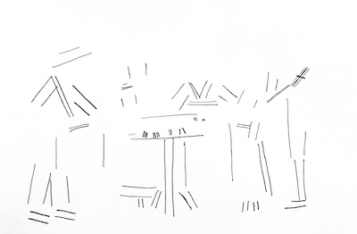
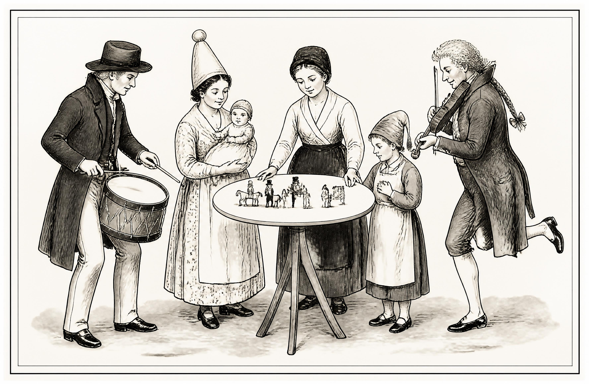
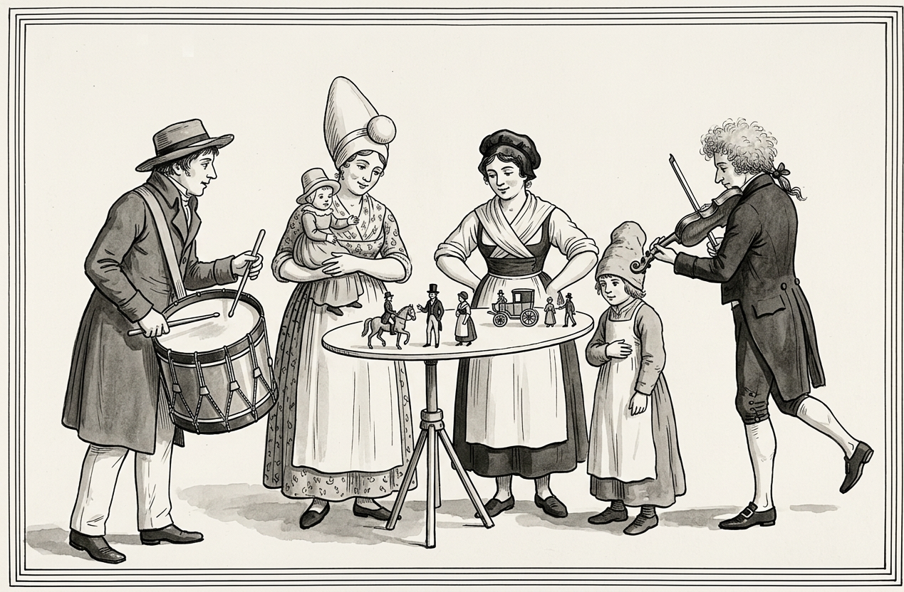
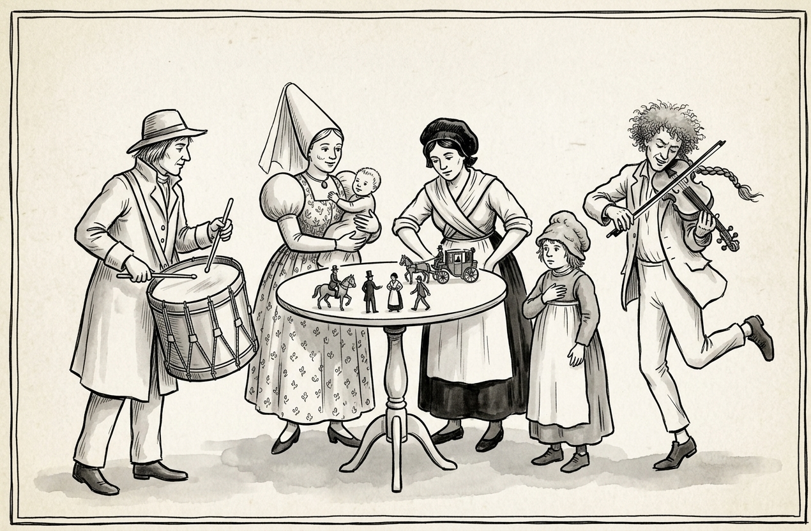

step 1: find an object/artwork in the public domain

French Puppet Show, Mary Browne, Diary of a Girl in France in 1821
step 2: basic research & overview
This is the work of Mary Browne, who catalogued her travel to France with family in 1821.
Mary was 14 when she drew these images, and generally held a negative and unimpressed view of France.
Her illustrations serve somewhat as a historical account of culture, capturing all the events and
people that stood out to her.
This diary serves a viewing of France through Mary Browne's eyes.
The public domain review quotes that
"Little is known about Mary's short life (she died when just 26 years old).
The introduction (of the diary), written by her niece Euphemia Stewart Browne, tells of how
she was a keen naturalist and later turned her artistic talents to painting
"an exquisite collection of butterflies and moths" which was left unfinished at her untimely death."
step 3: What interests me
- style
- The drawings, though illustrative, are almost scientific study. People watching put down as sketches.
- motivation
- Although Browne seemed apathetic to her experiences in France, the care in the drawings reflects more curiosity and interest than her writing would suggest.
- story quality
- There is some charm to these images, like they accompany a novel still unfolding.
- composition
- The central composition is consistent through the images without being boring.
step 4: visual description prompt given to AI
A monochrome reproduction of a pen, ink and watercolor drawing. The drawing is framed by a double border and shows a small troupe of street performers arranged in a row. There is a pale wash under their feet to suggest ground. A drummer stands at the far left, captured mid play. Facing the center of the drawing, the drummer wears a long dark coat, a brimmed hat and pale trousers, the drum is strapped diagonally to the drummers hip and hangs at the waist. The drum has a dark rim with a zigzag cord running through, the drummer strikes it with one drumstick angled towards the center of the composition and another hovering over the drum. Next to the drummer stands a woman wearing a large conical headreess that has a sepherical bulge at its top. Her dress has a pattern on it and she wear a long apron. She's holding a small baby against her chest. The child has a small hat and is in a long dress. The woman's arm is across the child and she's staring at the table in front of her with a small smile. Next to her, a little right of the center of the drawing is a second woman. She's dressed in a dark cap, a crossed blouse and a dark apron. She seems to be holding on to a table in front of her. In front of both women is a table with a tripod stand. It has a round white top and is about the width of the two people behind it. The round top has a collection of miniature figures, including a horse and its rides, a man behind them in a top hat, a small figure in a similar outfit to the second woman in the image and another figure walking behind them. These four characters are towards the fornt of the table and clearly visible, towards the back of the table there is also a small wheeled carraige and two more figures. Standing beside the table observing this scene is a child in a lumpy, long cap and wearing a long apron. One of the child's hands is visible, and is positioned across their torso. Standing to the right of the group is a fiddler, also facing the table. Drawn with an cloud of frizzy hair and a long tied braid at the nape of his head, he wears a dark tailcoat, breeches, stcoking and dark shoes. One of his legs is kciked back and the violin is against his shoulder as he draws the string. THe two musicians look sinward to the table, and the two woman at the center face outward while they are still looking at the table. The visual style is illustrative, with no shadows or obvious light source other than the wash for the ground. The perspective is also slightly flattened, as the tabletop and the drum show both the top and the side at once. Compositionally, the figures are build around the central figure, with all of them leaning in some way towards the central table. See my image prompt, a rough sketch, that illustrates these dynamics.
step 5: rough sketch analysis

step 6: gen AI round 1
ideogram

canva

firefly

gemini